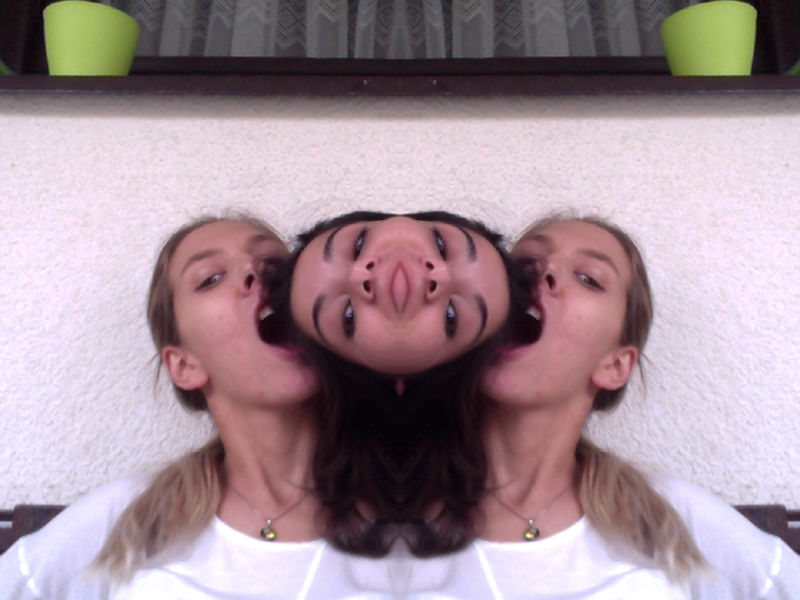

Za razliku od mnogih tipografskih znakova koji se kao logogrami u društvu slovnih znakova abeceda čine naša pisma, znak oktothorp ne prenosi značenje jednoznačno niti ima jasnu etimološku prošlost. Danas ga srećemo kao znak za težinu, monetarnu jedinicu, kartografsku oznaku, višeznačnicu u računalnim jezicima, označitelja opće teme i u mnogim drugim ulogama

Libro pondo
Još za Rimskoga carstva javlja se kao kratica za jedinicu libro pondo
Oktothorp
Brzopisnom stilizacijom znaka ℔ Isaac Newton ga je preinačio u preteču danas mu poznatog oblika.
Funta
Ušavši kao veličina u engleski monetarni sustav poprima novu, svima nam poznatu stilizaciju £.
Hash
Svakodnevna neupućena poraba znaka # donosi znak u neslućene, ali zanimljive uloge, posebno u trenutku kada ga prisvajaju računalne tehnologije.
„There are eight points on the symbol so "OCTO" should be part of the name.“ — Don Macpherson, Bell Research Labs
BIOGRAFIJA
Otkud je dosao i kamo ide?
Opće je prihvaćeno da oktothorp svoje korjene vuće iz doba Rimskoga carstva i latinskog izraza "libro pondo" (lat. libra = tezulja, pondo = težiti), gdje se kao jedinica za težinu označavao kraticom lb, obično pisan sa prevlakom (℔, unicode: L B BAR SYMBOL) kako bi se naznačilo da se radi o standardnoj mjernoj veličini.
Smatra se da je svojom brzopisnom stilizacijom oznake za težinu, funtu, Isaac Newton potaknuo prikazivanje oktothorpa u obliku u kojem ga danas uobičajeno srećemo (#).
Ulaskom funte u kao standarda za vrijednost u engleskom monetarnom sustavu, javlja se stilska preinaka njegova oblika u znak £.
Do današnjeg se dana, kao jedan od najzatajnijih članova pisma, oktothorp se našao u uporabi pod raznim začudnim i međusobno nepovezanim ulogama: od oznake za šah-mat,preko nezgrapne povisilice ♯ u notnom zapisu, preko kartografskog simbola za selo, znaka za broj, računalnog koda za komentirani tekst, id atribut, heksidecimalnu vrijednost ili kraj naredbe, pa sve do oznake za grupu ili temu u komunikaciji društvenih servisa.
Pogledaj film
SPOMENI
Oktothorp u literaturi
Znak # je nešto poput problematičnog djeteta. Na pvi pogled se čini bezopasnim i nekom vrsti mastora-od-svih-zanata. U SAD-ama "#5" znači broj pet, ali '5#" označava težinu od pet funti, dok u Britaniji njegov pleteni oblik predstavlja znak hash (značaj).Keith Houston, Shady Characters
U kartografiji, # je tradicionalni simbol za selo: osam polja oko središnjeg trga. To je podrijetlo njegova imena. Oktothorp znači osam polja.Robert Bringhurst, Elements of Typographic style
The following explains where "octothorpe" really came from. I am sending this to you because, as you will see, there are very few people who could know this story. ... Don Macpherson began using the term Octothorpe to describe the # symbol in his lectures.Ralph Carlsen, Octothorpe (The Answer)